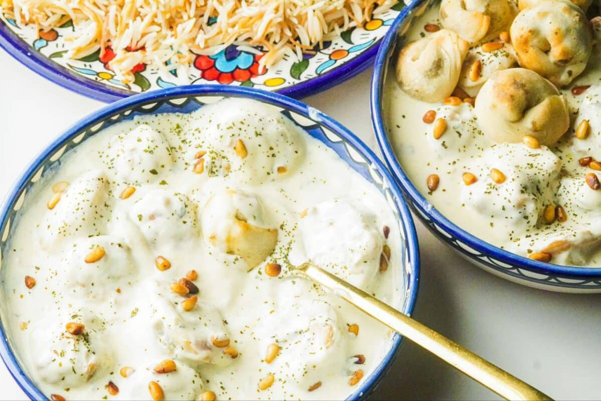

Shish Barak
Shish Barak

Description
Shish Barak is meat filled dumplings and cooked with yogurt soap
Ingredients
- Ground meat beef or lamp
- Onions
- Peppers
- Seven Spices Baharat
- Salt
- Olive Oil
- Get Dough Prepared
- Yogurt and water mixed
- Cornstarch
- Salt for the Yogurt sauce
Steps
- First, prepare the Dough
- Cook the Ground meat mixed with all the Ingredients
- Roll and cut the Dough
- Than, fill and shape the dumplings
- Prepare the yogurt sauce
- Begin, to cook the meat dumplings in the yogurt sauce
- Stir on low heat for 15-20 minutes
- Lastly, should be finished and ready to serve